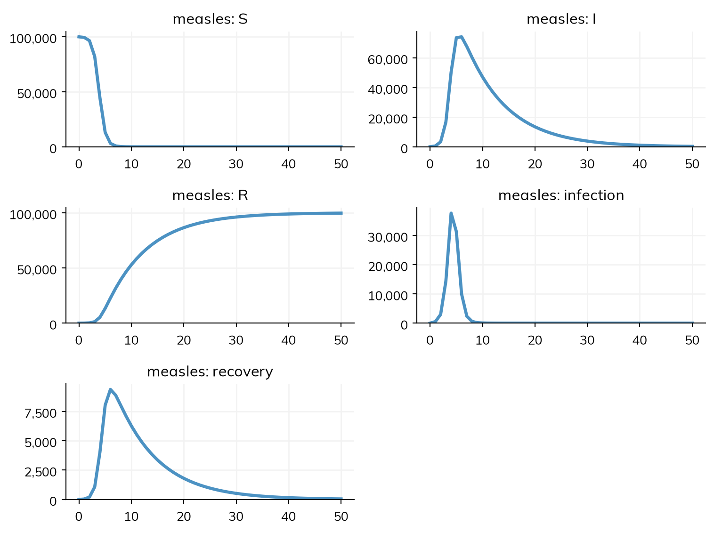
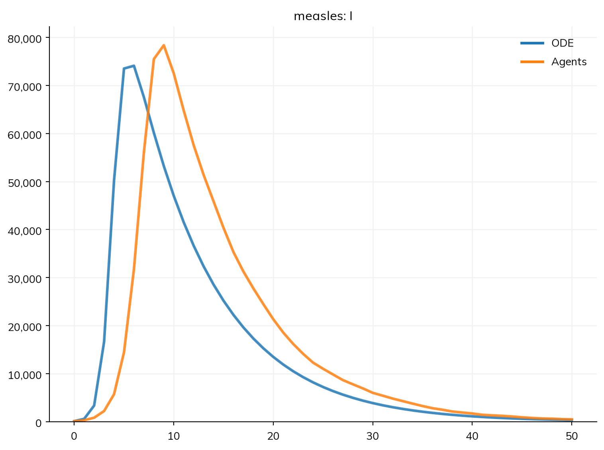

import starsim as ssT1 – Getting started
Starsim is a framework for modeling the spread of disease, and the health of populations more generally. A model in Starsim is written the way an epidemiologist would describe it: the states people can be in, the transitions between them, and the rates of those transitions. Starsim then runs it, either as a compartmental model (a set of equations for the number of people in each state) or as agents (one simulated person at a time).
These tutorials follow one example throughout: a deliberately simplified outbreak of measles in a town of 100,000 people. The numbers are typical of measles, but the model is for teaching, not a calibrated model of any real outbreak. This first tutorial asks the simplest question about it: how does an outbreak grow, and why does it stop? It writes the simplest model that can answer this, runs it, and shows how to check what was built. Tutorial 2 goes through the same model in more depth, Tutorial 3 gives the disease a more realistic course, and later tutorials add age groups, vaccination, several towns, and data.
You need only basic Python: variables, numbers, and function calls. By the end of this tutorial, you will be able to:
- write an SIR model and run it;
- plot its results and read what the run prints;
- check the model as Starsim has built it, with
describe(); - run the same model as agents.
Installing Starsim
Starsim is a Python package. To install it, type pip install starsim in a terminal (or %pip install starsim in a notebook). Then, in Python:
An SIR model of measles
In an SIR model, each person is in one of three compartments: susceptible (S), infectious (I), or recovered and immune (R). People move between them along two transitions:
- Infection, from S to I. Each susceptible person is infected at a rate of β times the share of people who are infectious. So the number of new infections per day is β S I / N, where N is the size of the population: the more infectious people there are, the faster the infection spreads.
- Recovery, from I to R. People with measles are infectious for about 8 days, so here they recover after 8 days on average.
For measles, β is about 1.9 per day: someone who is infectious, in a population where everyone is susceptible, infects about 1.9 people a day. Over the 8 days they are infectious, they infect 1.9 × 8 ≈ 15 people. This is the basic reproduction number, R0, and 15 is a typical value for measles, one of the most contagious diseases known.
In Starsim, the compartments are states, and each transition says where people move from, where they move to, and at what rate (after @):
S, I, R = ss.states('S I R')
infection = S >> I @ 1.9*I # From S to I, at a rate of β = 1.9 per day times the share infectious
recovery = I >> R @ ss.days(8) # From I to R, after 8 days on average
measles = ss.Disease(infection, recovery, init_prev=0.001)Read S >> I @ 1.9*I as “from S to I, at a rate of 1.9 × I”. A state in a rate, like I in 1.9*I, is the share of people in that state. A duration, like ss.days(8), is the average time spent in a state before leaving it. The rate 1.9 has no unit of its own, so it takes the unit of the duration: 1.9 per day. ss.Disease puts the transitions together into a disease, and init_prev=0.001 starts the outbreak with 0.1% of people infectious (100 people in a town of 100,000), and everyone else susceptible.
The disease is named measles, after its variable. These are the standard equations of an SIR model, which equations() prints:
measles.equations()dS/dt = -beta * S * I / N
dI/dt = beta * S * I / N - I / dur_I
dR/dt = I / dur_IHere dur_I is the infectious period (8 days), the mean time in I, so I / dur_I is the rate of recovery.
Running the model
To run the model, give it to a sim (ss.Sim), with the size of the population and how long to run for, here 50 days:
sim = ss.Sim(measles, total_pop=100_000, stop=ss.days(50))
sim.run()
sim.plot()Sim: measles, 100,000 people, as an ODE, days 0 to 50
measles: R0 = 15.2, with 100 infectious at the start
Done in 0.0031 s; measles: 99,900 infections; at most 74,112 infectious, on day 6
The run prints three lines: what it ran (the disease, 100,000 people, as an ODE, from day 0 to day 50), R0 (15.2, as worked out above), and what happened: how many people were infected, and the size and day of the peak.
Starsim chose to run this model as an ODE (a deterministic compartmental model, solved as a set of differential equations), since nothing in it needs individual people. The plot shows each state (S, I, and R), and each transition as the number of people who made it each day (infection and recovery).
The curves answer the question we started with. At first, almost everyone is susceptible, so each infectious person infects about 15 others, and the number infectious grows several times over in a few days. But each infection uses up a susceptible person. Once most of the town has been infected, an infectious person meets mostly people who are already immune, and infects fewer than one other person before recovering: then the number infectious falls, even though β has not changed. The outbreak stops because it runs out of susceptible people, not because the disease becomes less contagious.
With an R0 of 15 and nobody immune, almost everyone in the town is infected, and the outbreak peaks within a week. This is far faster than real measles outbreaks, because the model has no latent period: people are infectious from the moment they are infected, whereas with measles they are infected for about 10 days before they can infect anyone else. Tutorial 3 adds this.
Checking the model
To build a model that runs, Starsim fills in whatever it is not given: here, for example, how people mix (everyone with everyone else equally, since no contacts were given), and how the time spent infectious varies between people (exponentially, as in the standard ODE). describe() shows the whole model as Starsim has built it: every state, transition, and setting, with each value that Starsim chose itself marked as guessed, so that nothing about the model is hidden:
sim.describe()Sim 1 module, 100,000 people, days 0 to 50
| solver | ode | guessed: every part of the model has a compartmental form |
| unit | day | from the typed values in the model |
Disease 'measles' 3 states, 2 transitions
| states | S, I, R | |
| I infectious | ||
| init: init_prev = 0.001; the rest in S | ||
| infection | S -> I transmission, from I | |
| beta = 1.9 per day | ||
| rate = 1.9 × I.n / N | homogeneous mixing | |
| recovery | I -> R spontaneous | |
| time in I ~ exponential(mean = 8 days) | guessed: scalar duration |
Mixing and interventions
| mixing | homogeneous, 1 contact per day | guessed: no network given |
Results and running
| results | S, I, R, and one flow per transition | |
| schedule | every day: measles |
Notes
| note | unit='day' (from the typed values in the model) |
It is worth reading describe() for every new model, to check that it is the model you meant. describe(verbose=True) adds how the model is run (as compiled code or as agents) and what each rate is per step.
The same model as agents
Starsim can also run the same model as agents: one simulated person at a time, each with their own state, who are infected and recover by chance. Giving n_agents= says how many agents to simulate. Here, 10,000 agents stand for the 100,000 people of the town, so each agent stands for 10 people. To compare the two, ss.parallel() runs several sims, each with a label, and plots any of their results together, here the number infectious:
agents = ss.Sim(measles, total_pop=100_000, n_agents=10_000, stop=ss.days(50))
msim = ss.parallel({'ODE': sim, 'Agents': agents})
msim.plot('measles.I')MultiSim: 2 runs of 2 scenarios (ODE, Agents)
Done in 0.45 s
The epidemic is much the same: almost everyone is infected, and the peak is about as high. It comes a few days later as agents, though, and the run prints a note saying why. Agents move one step of time at a time (by default, a day), and this outbreak is so fast that a day is a long step: the number of infectious people grows several times over in a day. With a shorter step, such as dt=ss.days(0.25), agents follow the ODE closely; Tutorial 2 shows how.
Agents are what a model needs when people differ in ways that compartments can’t hold, such as each person’s own contacts in a network. For a model like this one, where everyone mixes with everyone else, both give the same answer when the step is short enough. The model is written the same way either way. The core tutorials (T1 to T9) mostly use the ODE, since it is fast and gives the expected epidemic, and say where agents would give something different; the agent-based tutorials (A1 to A5) go further with agents.
Exercises
- Suppose people with measles were infectious for only 5 days, with the same β. What would R0 be? Change the model, run it, and check the R0 the run prints. How does the epidemic change?
- Run the agent version of the model with 1,000 agents instead of 10,000 (each standing for 100 people). What changes in the plot, and why?
- Using the output of
describe(), find out how Starsim assumes that people mix, and how long people stay infectious (the distribution as well as the average).
Solutions · Next: T2 – Building a model
Further reading
- Wikipedia: Compartmental models in epidemiology: the SIR model and its relatives, with their equations
- EpiModel: Mathematical modeling of infectious disease dynamics: the same SIR model in R, as a compartmental model and as individuals
- odin2: Getting started: an SIR model written as equations in R
- Epiverse epidemics: Getting started: ready-made compartmental epidemic models in R